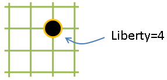
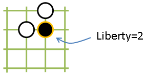
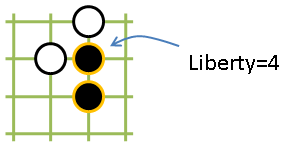
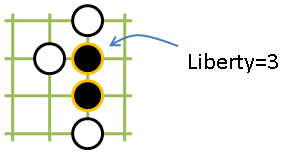

Code Kata - Atari
This Code Kata was set by Keith Braithwaite, at his session TDD As If You Meant It, during Software Craftsmanship 2009.
The challenge is taken from the game of Go. Go is played by two players who alternately place black and white stones on the vacant intersections of a grid of 19×19 lines. A stone is atari if a stone or chain of stones has only one liberty. The liberty is the number of vacant points that are adjacent to a stone or connected group of same coloured stones (diagonals do not count). Some example configurations, with their liberty, are shown in the following pictures:
   
The Kata is to calculate whether a stone is atari, for an arbitrary collection of stones.
Keith had some rules about how you should proceed with coding, which define an extreme limit of TDD:
- Write exactly ONE failing test.
- Make the test from (1) pass by first writing implementation code IN THE TEST.
- Create a new implementation method/function by:
- doing extract method on implementation code created as per (2), or
- moving implementation code as per (2) into an existing implementation method.
- Only ever create new methods IN THE TEST CLASS.
- Only ever create implementation classes to provide a destination for extracting a method created as per (4).
- Populate implementation classes by doing move method from a test class into them.
- Refactor as required.
- Go to (1).
Some reactions from other attendees of the session are here and here.